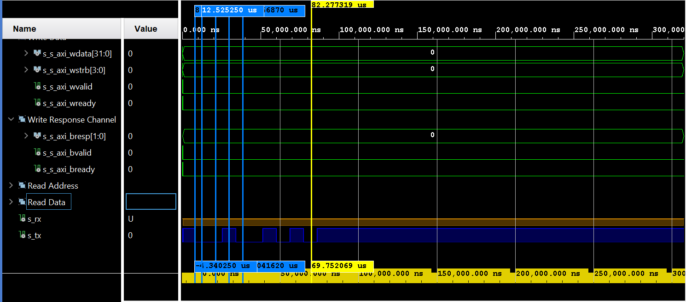

The AXI4 communication protocol consis of 5 communication channels, listed above
All five channels implements a HandShake mechanism. But first, lets explain the purpose of each channel.
In this channel the master tells the slave which address wants to write at. An address valid bit is set to high to signal the slave the masters wants to especify an address for a write operation. When slave is ready to read the address, sets the read ready bit to high. Then this channel consis of an address bus, a data valid and a read ready wires.
equally important is the data to be written at the specified address. The data bus consist of 32 bits and there is also a data valid bit and read ready bit. The mechanism is the same
Once the write operation, handled by the two previous channels, is complete, The master would like to know if it was succesfull. This channel two bit bus for the slave to tell the master if write succeded or an error happened. also has a data valid bit to signal the master that is ok to read the response status. When the master already read the write response status then has to set read ready bit to high to tell the slave.
The same way the master has to specify which address wants to read at. This channel has then an address bus, a read address valid and read address ready bits.
The slave drives the data bus and the master is who reads it. In this bus the slave puts the data stored at the address specified by the master in the read address channel.
The master is responsible to drive bus data in Address Write, Data Write and Address Read Channels. Hence the master is also responsible of driving the corresponding data valid signals. The valid signal in each channel tells the slave that is permitted to read the bus data. the latter applies to all channels. For Write Response and Data Read channel the responsible to drive the valid signals is the slave since it is also the slave who sets the data in those channels. The one who reads the data in the bus can tell the other part it has finished to read the data by setting the ready bit to high. The Address Write Ready to name an example.
The enforced rules are:
To transmit by UART the byte 0x82, one has to set the address 0x04 in the AXI UART, which
is the Tx FIFO register. The Address 0x04 is set in the Address Write channel and the byte 0x82
is set in the Data Write bus as can be apreciated in the image below. When both data valids
in address and data write channels is set to 1, the UART slave start to read the data. It is
supposed that communication is atomic and each channel works independently. But in practice
transmission only started when both data valids were set to 1. Afterwards the read ready in both
channels are set to 1 by the UART slave.
check https://www.realdigital.org/doc/a9fee931f7a172423e1ba73f66ca4081#:~:text=Advanced%20eXtensible%20Interface%204%20(AXI4,%2C%20as%20AXI3%2C%20in%201996.
and check https://support.xilinx.com/s/article/1053914?language=en_US
The communication baud rate in this simulation is 115200 and the clock frequency is 100Mhz. Hence the handshake process is more faster than transmission speed so Tx timing diagram is shown in separate image below.
To send multiple bytes is very convenient to enable interrupts in the CTRL_REG. After transmission in Tx pin is finished, the interrupt pin will signal a pulse.